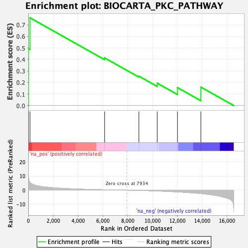
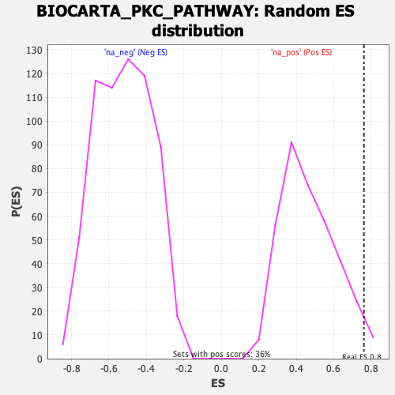

| | | Dataset | DE_genes2 |
| Phenotype | NoPhenotypeAvailable |
| Upregulated in class | na_pos |
| GeneSet | BIOCARTA_PKC_PATHWAY |
| Enrichment Score (ES) | 0.76096517 |
| Normalized Enrichment Score (NES) | 1.6308779 |
| Nominal p-value | 0.025 |
| FDR q-value | 0.19143495 |
| FWER p-Value | 0.864 |
Table: GSEA Results Summary

Fig 1: Enrichment plot: BIOCARTA_PKC_PATHWAY
Profile of the Running ES Score & Positions of GeneSet Members on the Rank Ordered List
| PROBE | GENE SYMBOL | GENE_TITLE | RANK IN GENE LIST | RANK METRIC SCORE | RUNNING ES | CORE ENRICHMENT | | 1 | NFKBIA | | | 20 | 10.048 | 0.4929 | Yes |
| 2 | RELA | | | 137 | 5.593 | 0.7610 | Yes |
| 3 | NFKB1 | | | 6140 | 0.317 | 0.4134 | No |
| 4 | PRKCB | | | 8899 | -0.170 | 0.2548 | No |
| 5 | GNAQ | | | 10376 | -0.579 | 0.1940 | No |
| 6 | PLCB1 | | | 12003 | -1.223 | 0.1558 | No |
| 7 | PRKCA | | | 13885 | -2.403 | 0.1601 | No |
Table: GSEA details [plain text format]

Fig 2: BIOCARTA_PKC_PATHWAY: Random ES distribution
Gene set null distribution of ES for BIOCARTA_PKC_PATHWAY